Overview
This project is about filtering images in space and in frequency. Part 1 implements 2D convolution and uses it to find edges. Part 2 uses low-pass and high-pass filtering for sharpening, hybrid images, and multiresolution blending.
Part 1.1: Convolutions from Scratch
I implemented 2D convolution in NumPy. The filter is flipped before it slides. If the image is H by W and the kernel is Kh by Kw, the image is zero-padded by Kh − 1 and Kw − 1 on every side, so the output is (H + Kh − 1) by (W + Kw − 1) and the edges are kept instead of cropped off. One version uses four loops. The other uses two loops over the output and sums each window with NumPy. The results match SciPy, but SciPy was much faster.
def conv(im, filter, efficient=True):
filter = filter[::-1, ::-1]
imH, imW = im.shape
filtH, filtW = filter.shape
out = np.zeros((imH + filtH - 1, imW + filtW - 1))
imPadded = np.pad(
im,
((filtH - 1, filtH - 1), (filtW - 1, filtW - 1)),
mode="constant"
)
outH, outW = out.shape
if efficient:
for x in range(outH):
for y in range(outW):
out[x, y] = np.sum(imPadded[x:x+filtH, y:y+filtW] * filter)
else:
for x in range(outH):
for y in range(outW):
currSum = 0
for i in range(filtH):
for j in range(filtW):
currSum += imPadded[x + i, y + j] * filter[i, j]
out[x, y] = currSum
return out
I converted a photo of myself to grayscale and convolved it with
a 9×9 box filter, np.ones((9, 9)) / 81, and with
the finite differences Dx = [[1, 0, -1]] and
Dy = Dx.T. The box filter blurs by averaging a
local neighborhood. Dx responds to horizontal
intensity changes, which show up as vertical edges, and
Dy does the opposite.

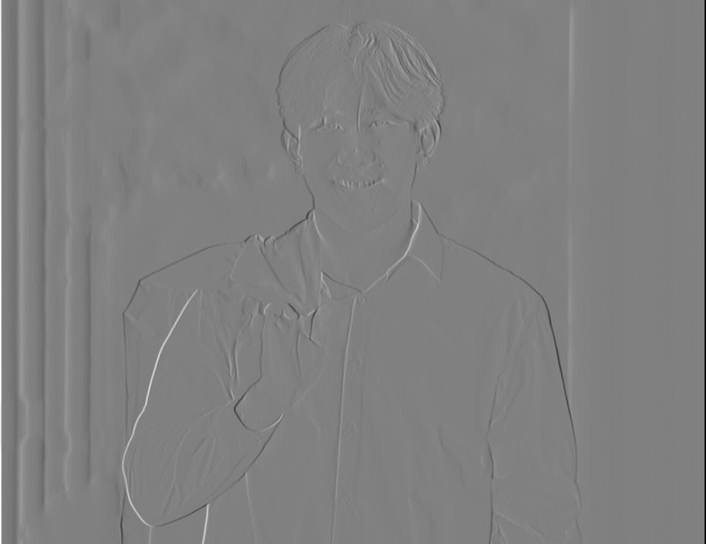


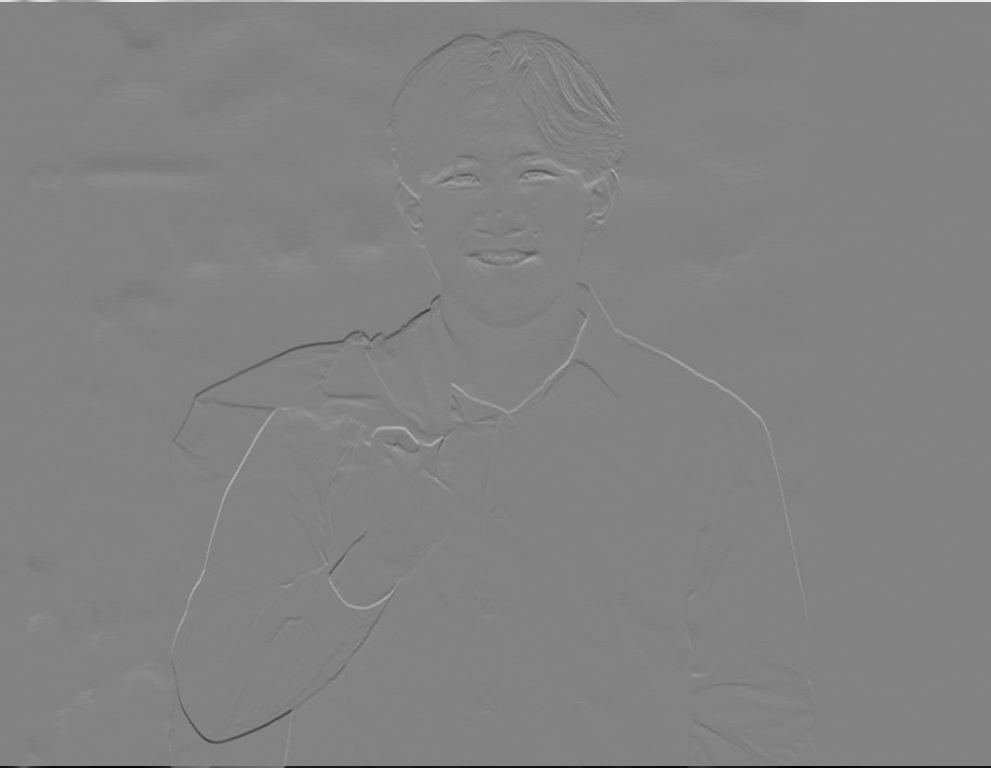
Part 1.2: Finite Difference Operator
On the cameraman image I used convolve2d with
mode="same" so the partial derivatives stay the
same size as the input. The gradient magnitude is
sqrt(dx² + dy²). To get an edge image I thresholded
at 0.2 × max(magnitude). That cutoff was chosen by
looking at the result: it keeps the coat, camera, and tripod,
and it drops most of the weak texture in the grass and sky.
A lower threshold would recover fainter edges, but it also
brings the noise back.
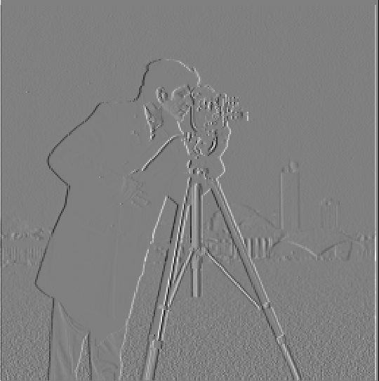


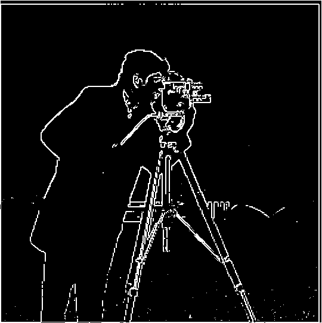
Part 1.3: Derivative of Gaussian
The raw finite-difference edges are noisy because differentiation
amplifies high frequencies. I built a 2D Gaussian with
cv2.getGaussianKernel(ksize=9, sigma=2) and an outer
product, blurred the cameraman, and repeated the same derivative,
magnitude, and threshold. The edges get broader and cleaner,
since the Gaussian removes the noise before the difference
operator sees it.

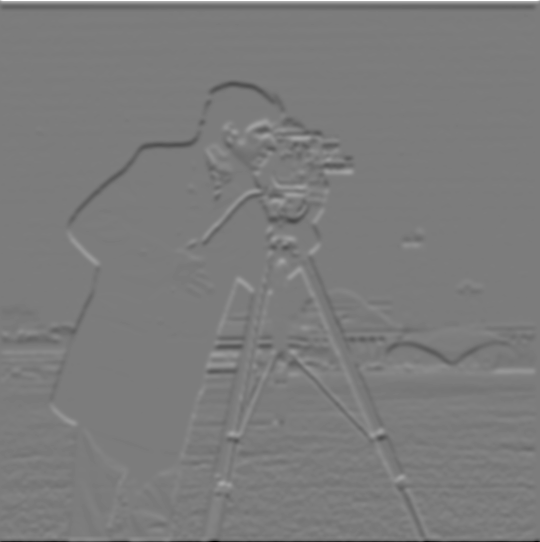

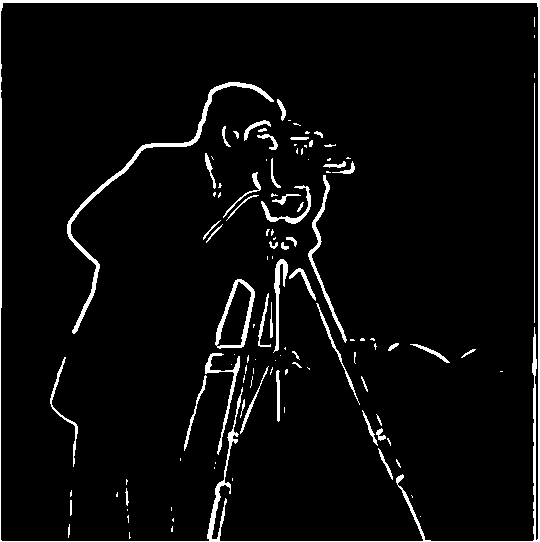
Convolution is associative, so (I ∗ G) ∗ D = I ∗ (G ∗ D).
I convolved the Gaussian itself with Dx and
Dy to get derivative-of-Gaussian filters, then
applied each one to the original image in a single convolution.
The pictures below differ a little. I used mode="same"
for those, because it was easier to keep each result the size of
the cameraman, and the two pipelines do not crop the border in
exactly the same way. When both orders use mode="full",
they match: the largest absolute difference is about
7.5 × 10⁻¹⁶.
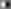
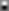
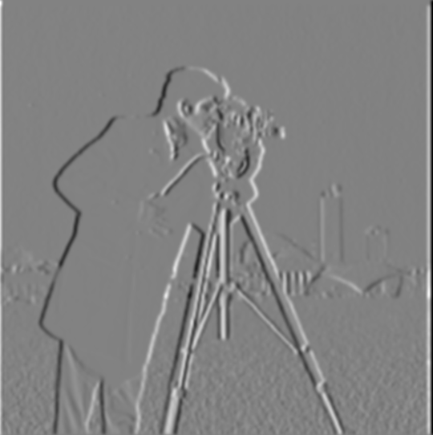
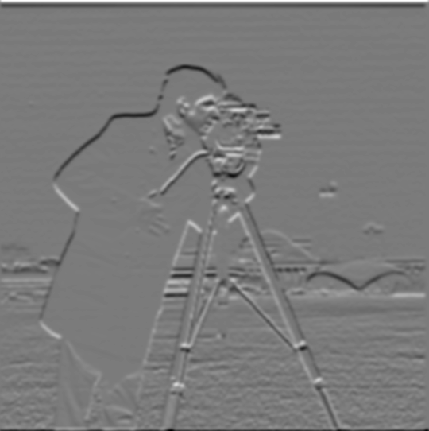
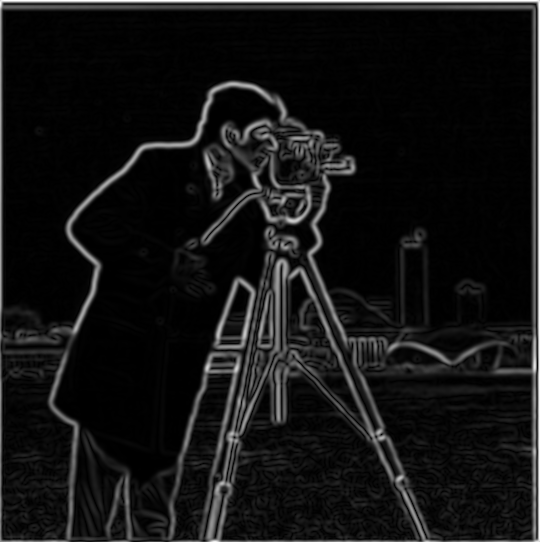
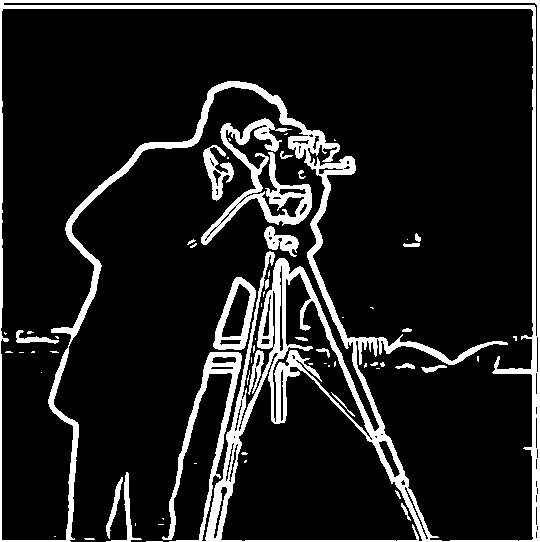
Part 2.1: Image Sharpening
A Gaussian is a low-pass filter, so I − G ∗ I is
the high-frequency residual. Unsharp masking adds a fraction of
that residual back:
I_sharp = I + c (I − G ∗ I), with c = 1.5
here. The same operation is one convolution with
(1 + c) δ − c G, where δ is an impulse
the size of the Gaussian. Color images are filtered per channel.
The high-frequency pictures are shifted by 0.5 only so negative
values are visible.
c = 0 leaves the image alone, and a larger
c pushes the edges harder.
Taj Mahal


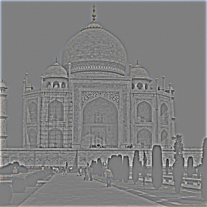
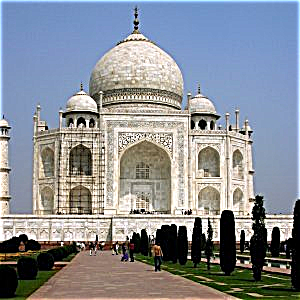
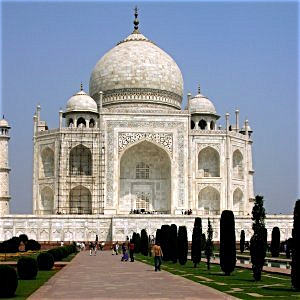

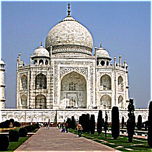
On the Taj, 0.5 is a light touch and 1.5 is the sharpened result above. At 3.0 the dome and the trees start to halo, and the sharpening begins to dominate the photo.
Baby seal
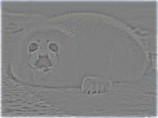
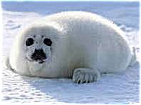
This baby seal is low resolution and already noisy, so adding the high frequencies back amplified that noise.
Blur, then sharpen
I also took a sharper, higher-resolution photo of a seal, blurred it, and sharpened the blur. It did not change much. The Gaussian is small relative to this image, so it only dents the highest frequencies, and there is not much residual to add back. What the blur does remove still cannot be reconstructed exactly.
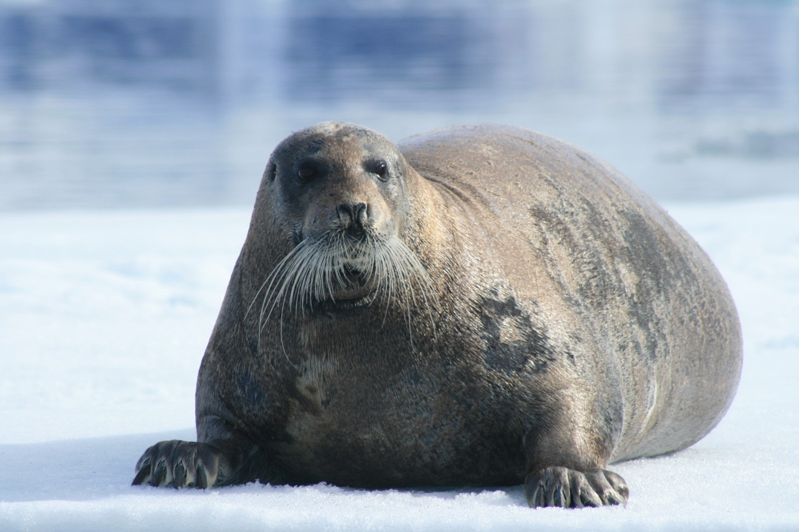
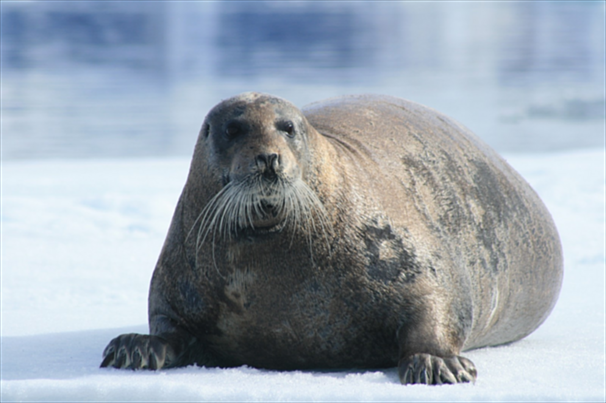
Part 2.2: Hybrid Images
A hybrid image is the low frequencies of one photo added to the high frequencies of another, so the reading changes with distance.
The low-pass filter is a 25×25 Gaussian, and the high-pass filter is the image minus that blur, scaled by 1.5 so the sharp identity is not washed out. A Gaussian and a Laplacian do not have a hard cutoff, so the cutoff frequency is only implicit in σ. I picked the sigmas by trying a few until the near and far readings separated.
Derek and Nutmeg
Nutmeg is the high-frequency image (σ = 2) and Derek is the low-frequency image (σ = 8).


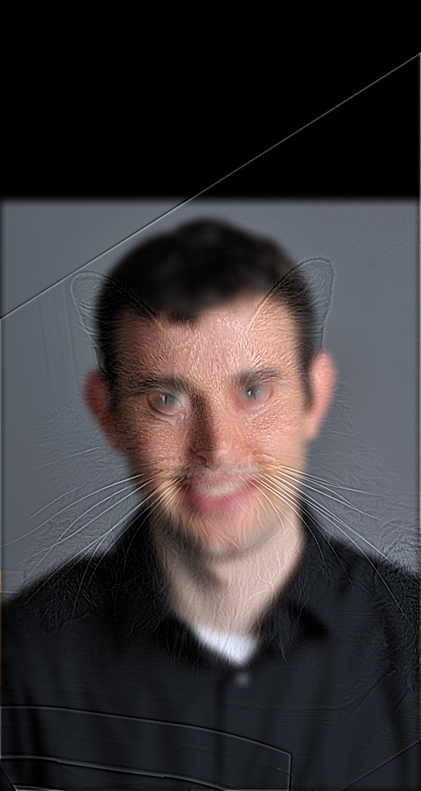
Speed and Ronaldo
This is the pair I used for the frequency analysis. Speed is
high-pass with σ = 2, and Ronaldo is low-pass with σ = 8.
The log-magnitude FFTs are
log(|fftshift(fft2(gray))|). After the low-pass,
energy sits near the center. After the high-pass, the center
is suppressed and the energy is farther out. The hybrid keeps
both.
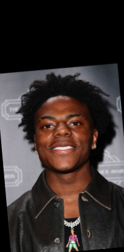
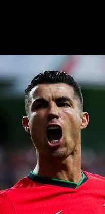
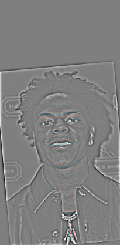
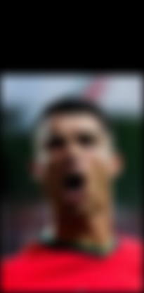
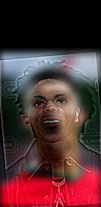
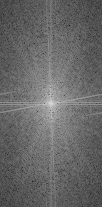
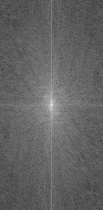
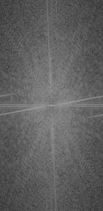
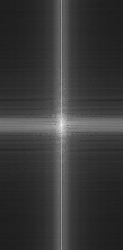
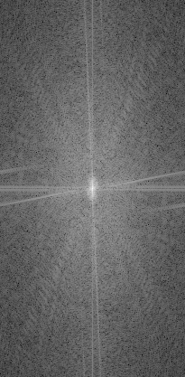
Yamal and Messi
Yamal is high-pass with σ = 3 and Messi is low-pass with σ = 6.
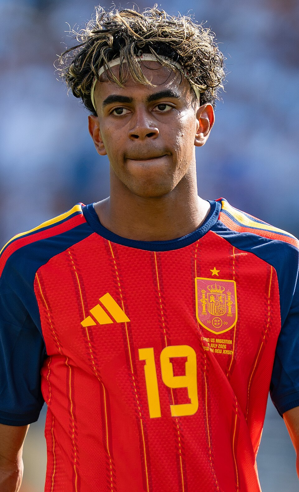
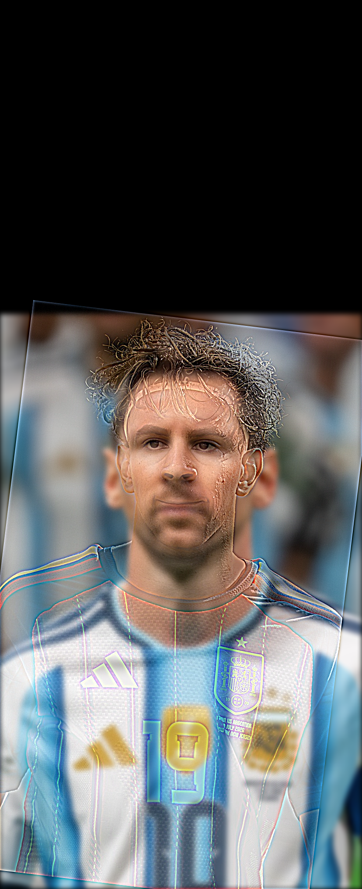
Part 2.3: Gaussian and Laplacian Stacks
A stack is a pyramid without the downsampling, so every level
stays the size of the original image. I did not use
cv2.pyrDown or any built-in pyramid. I first built
the Gaussian stack by blurring the previous level with the same
Gaussian again. For the final version I blur the original image
instead, doubling σ at each level (2, 4, 8, 16, 32) and growing
the kernel with σ. The bands separate more clearly, and the
blends are smoother. The Laplacian level is
L_i = G_i − G_{i+1}, and the last level is the
leftover low-frequency image. Signed bands are displayed with
zero mapped to gray.
Apple Gaussian stack
Levels 0, 2, and 5. Level 0 is the original, and each later level is a blur of that original at a larger σ.

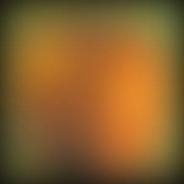
Orange Gaussian stack

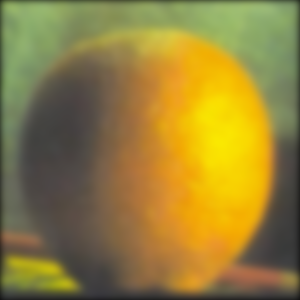
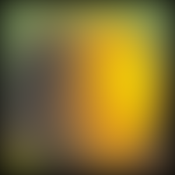
Laplacian stack
The figure below is the apple and orange Laplacian bands used for the blend, laid out like Figure 3.42 in Szeliski. Each row is a coarser band. The left column is the apple Laplacian masked to the left half, the middle is the orange Laplacian masked to the right half, and the right column is their sum. The bottom-right image is the reconstruction.
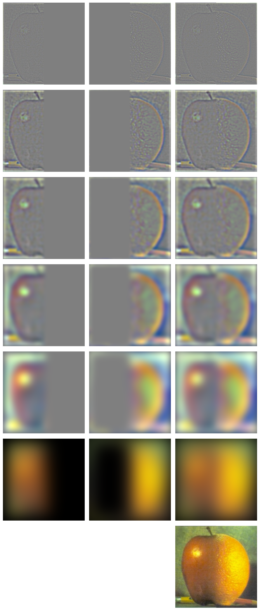
Part 2.4: Multiresolution Blending
At each level I blend with a Gaussian stack of the mask,
B_i = M_i L_i^(1) + (1 − M_i) L_i^(2), then collapse
the stack by summing the bands. Blurring the mask, rather than
using a hard cut at every frequency, is what softens the seam.
A single cut leaves a line in the fine bands, and blurring the
whole composite just smears both images.
Oraple
The mask is a vertical step, 1 on the left half and 0 on the right, with 6 levels and a base σ of 2. Fine detail stays on its own side, and the color transition moves over several pixels.
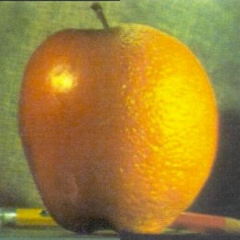
Irregular mask: eye and moon
Both images are resized to 400×400. The mask is a disk of radius
0.28 × min(h, w) centered on the moon, so the eye
is the region where the mask is 1. This was the cleanest custom
blend. The iris keeps its fine structure, and the sclera fades
into the lunar surface instead of leaving a circle.
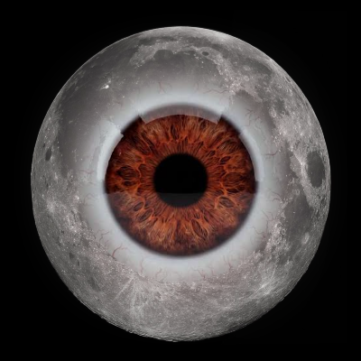
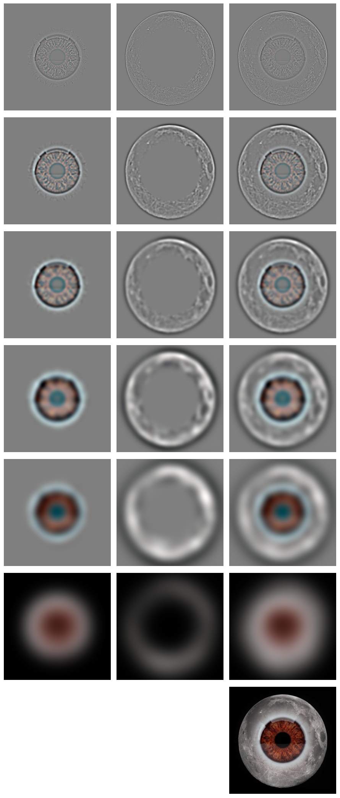
Straight seam: basketball and soccer ball
The balls started at different scales, so I cropped the white background, resized each ball to a common diameter, and centered them on a 400×400 canvas before the vertical mask. Five levels were enough once the objects actually lined up.
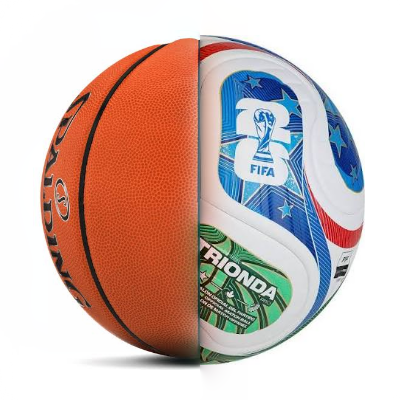
Irregular opening: door and beach
The door is the foreground and the beach is resized to the same
canvas. The mask is 1 on the door and 0 inside a rectangle that
covers the doorway, from row 30 to h − 35 and from
column 35 to 0.73 w. In hindsight I should have just
used a hard edge here. The doorway is already a sharp boundary,
so blending it across frequency bands does not add much.
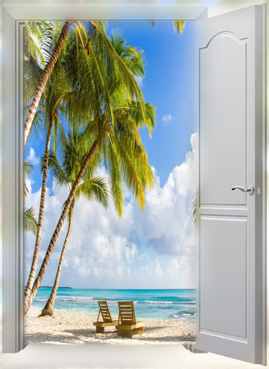